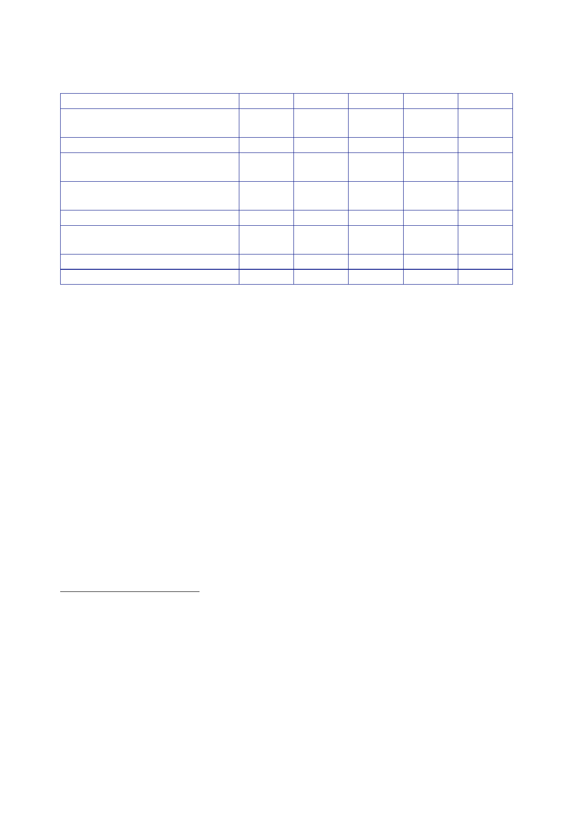

The Report
of the Iraq Inquiry
GDP at
market prices (current
GDP per
capita GDP (current US$)635
Electricity
production (megawatts)636
Oil
production (million barrels per
Under-five
mortality rate638
Primary
school enrolment, both
1989
2002
2003
2004
65.6
3,850
n/a
n/a
3,958
n/a
n/a
500
–
3,456
36.6
1,391
4,030
2.90 2.02
1.31 2.01
55 43 42
42
90 n/a 94
93
43 43 43
43
n/a n/a
113/133 129/146
2009
111.7
3,725
5,700
2.39
38
92
44
176/180
630
World Bank,
Data, [April 2016], Iraq: GDP
at market prices (current US$).
631
World Bank,
Data, [April 2016], Iraq: GDP
per capita (current US$).
632
Brookings,
Iraq Index, Electricity.
Figure for
2002 is a estimated pre-war level.
633
US Energy
Information Administration website. Iraq Crude
Oil Production by Year.
634
World Bank,
Data, [April 2016], Iraq:
Mortality rate, under-5 (per 1,000). Under-5
mortality rate is
a leading
indicator of the level of child health and overall development in
countries.
635
World Bank,
Data, [April 2016], Iraq: Net
enrolment rate, primary, both sexes (%). Figure
for 2009
relates to
2007 survey.
636
World Bank,
Data, [April 2016], Iraq: Labor
force participation rate, total (% of total population
ages 15‑64).
637
Transparency
International, Corruption
Perceptions Index (CPI). Iraq was
not included in the CPI before
2003. The
CPI draws on multiple data sources.
372